Deployment Overview
This document describes how to set up multi-factor authentication (MFA) for your Hillstone® Firewall with AuthPoint as an identity provider. Your Hillstone Firewall must already be configured and deployed before you set up MFA with AuthPoint.
Your Hillstone Firewall can be configured to support MFA in several modes. For this integration, we set up RADIUS authentication for the Hillstone Firewall.
This integration was tested with v5.5 of Hillstone SG-6000-C1000.
Hillstone Authentication Data Flow with AuthPoint
AuthPoint communicates with your Hillstone Firewall with the RADIUS protocol. This diagram shows the data flow of an MFA transaction for RADIUS.
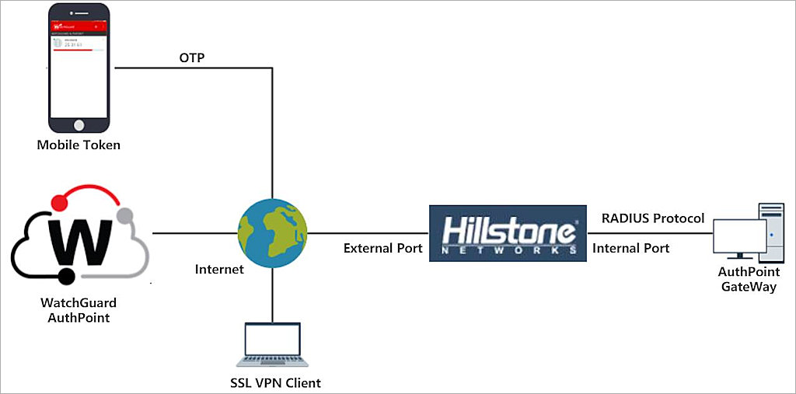
Before You Begin
Before you begin these procedures, make sure that:
- You have installed and configured the AuthPoint Gateway (see About Gateways)
- End-users can log in to the Hillstone Firewall
- A token is assigned to a user in AuthPoint
Configure Hillstone Firewall
Configure a RADIUS Server
To use RADIUS authentication with Hillstone Firewall VPN, you must add a RADIUS server (the AuthPoint Gateway) in Hillstone.
- Log in to the Hillstone Networks' Firewall Web UI at https://<IP address of Hillstone >.
- Select the Object tab.
- From the side menu, select AAA Server.
- Select New > Radius Server.
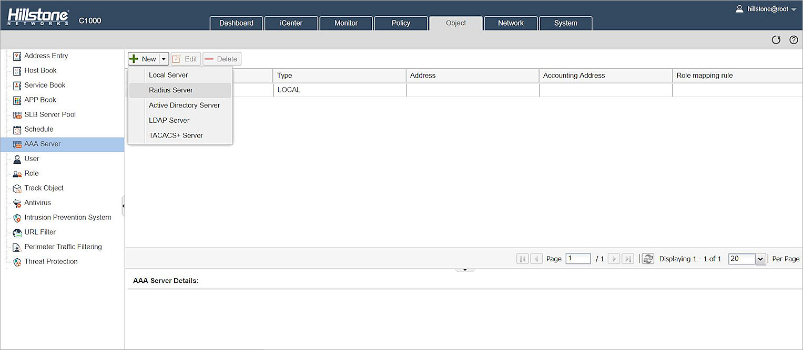
- In the Server Name text box, type a name for the RADIUS server. In our example, we type AuthPoint Gateway.
- In the Server Address text box, type the IP address of the AuthPoint Gateway (RADIUS server).
- Leave the default values for Virtual Router and Port.
The default port is 1812. If you already have a RADIUS server installed that uses port 1812, you must use a different port for the AuthPoint Gateway.
- In the Password text box, type a shared secret key (password) that Hillstone and the AuthPoint Gateway (RADIUS server) will use to communicate.
- In the Confirm Password text box, type the shared secret key again.
- From the Timeout drop down list, select 30.
- Make sure the Enable Account check box is not selected.
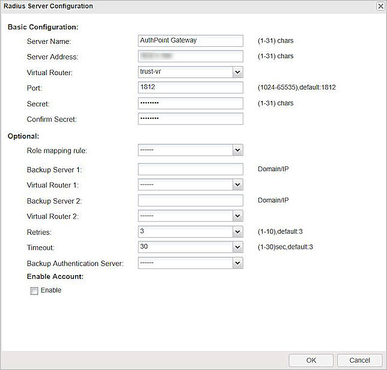
- Click OK.
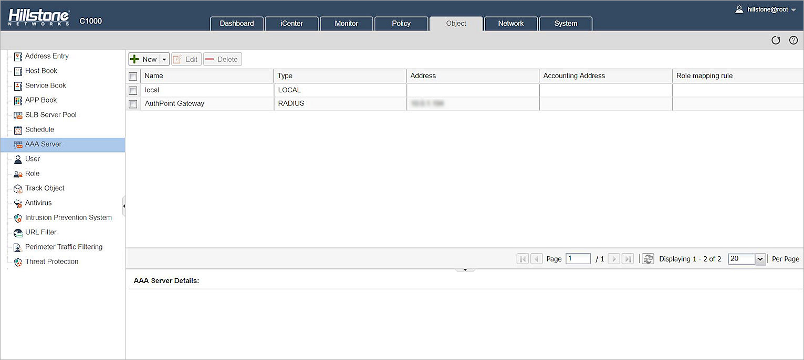
Configure an SSL VPN Address Pool
When a client connects to the VPN, an IP from an IP address pool is assigned to the client. An address pool must be created in the Hillstone Networks' Firewall.
- Select the Network tab.
- From the side menu, select VPN > SSL VPN .
- Click Address Pool.
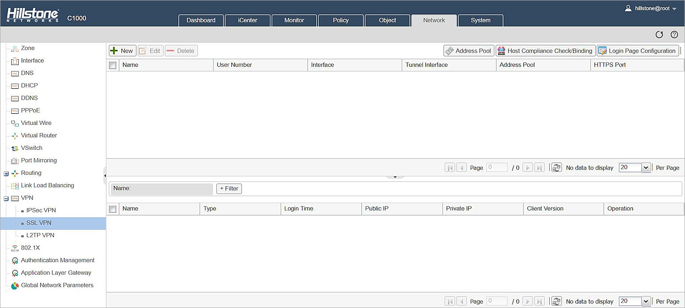
- Click New.
The Address Pool Configuration window opens. - In the Address Pool Name text box, type a name for the address pool.
- In the Start IP text box, type the first IP of the pool.
- In the End IP text box, type the last IP of the pool.
- In the Mask text box, type the subnet mask of the address pool.
- (Optional) In the DNS text boxes, type the DNS for this pool.
- Click OK.
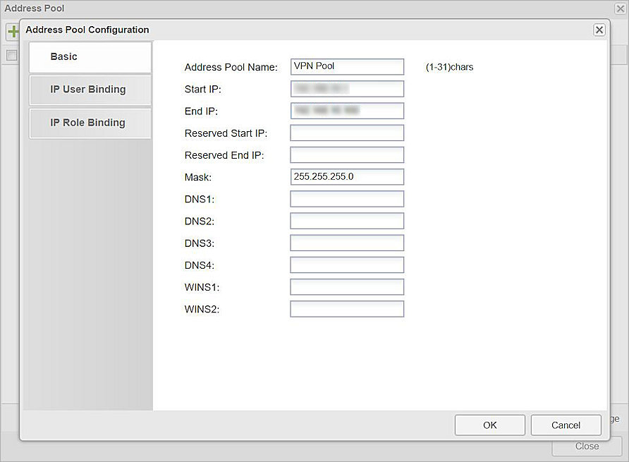
- Click Close.
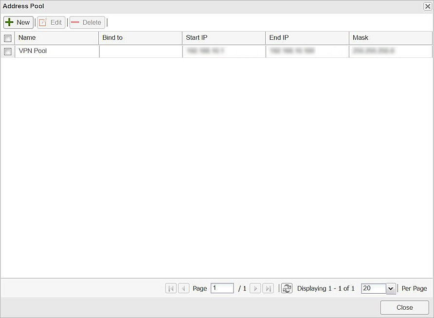
Configure a Tunnel Interface
A tunnel interface is an interface that links between two locations through an untrusted network. To avoid man-in-the-middle attacks that could capture data being transferred between these locations, the data is encrypted.
- Select the Network tab.
- From the side menu, select Zone.
- Click New.
The Zone Configuration window appears. - In the Zone text box, type a name for the zone.
- For Type, select Layer 3 Zone.
- Leave the default value for other settings.
- Click OK.
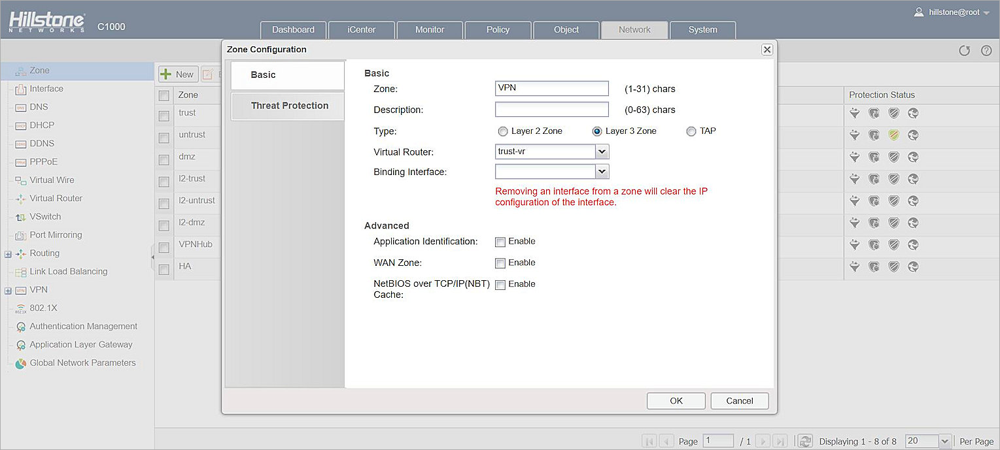
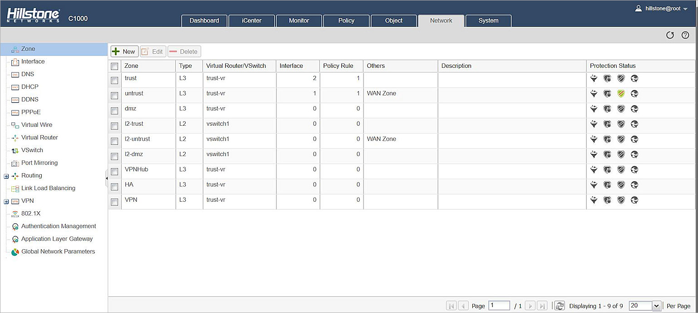
- Select the Network tab.
- From the side menu, select Interface.
- Click New > Tunnel Interface.
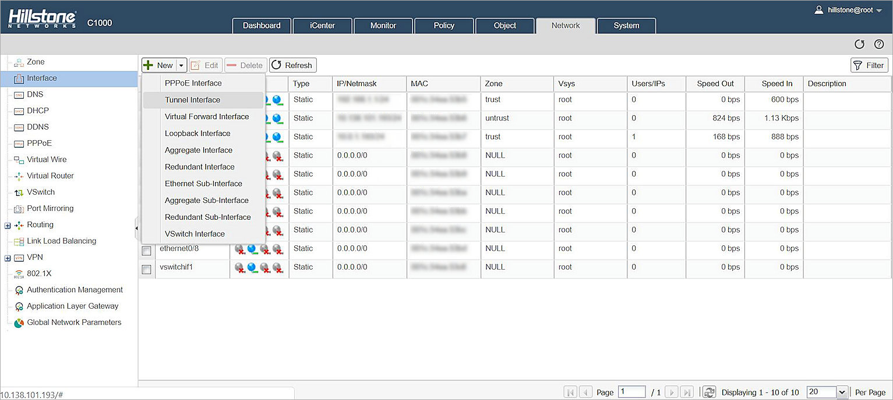
- In the Interface Name text box, type a number between one and eight.
- For Binding Zone, select Layer 3 Zone.
- From the Zone drop down list, select the VPN zone that you created.
- In the IP Address text box, type the static IP address for the tunnel. The IP address must be in the same network segment as the SSL VPN address pool.
- In the Net mask text box, type the network subnet mask.
- Click OK.
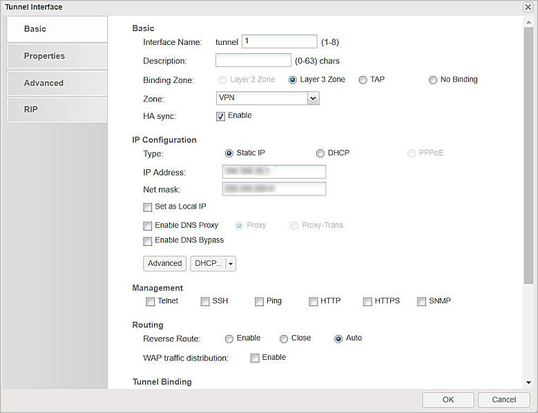
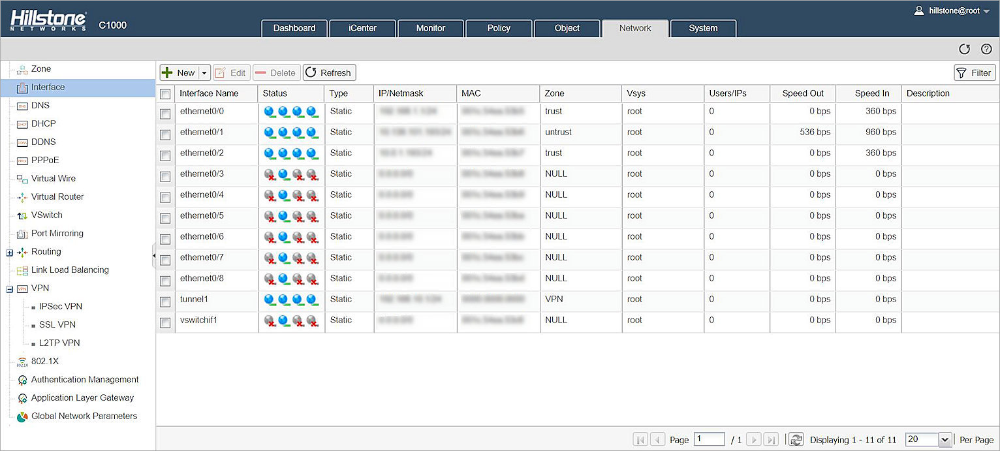
SSL VPN Settings
- Select the Network tab.
- From the side menu, select VPN > SSL VPN.
- Click New.
The SSL VPN Configuration window opens. - In the SSL VPN Name text box, type the name for the SSL VPN.
- From the AAA Server drop down list, select the RADIUS server you configured.
- Click Add.
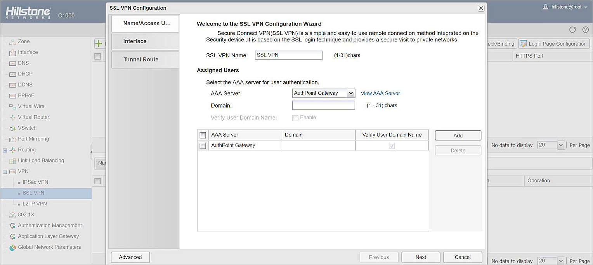
- Click Next.
- From the Egress Interface1 drop down list, select the interface connected to the external network.
- In the Service Port text box, type 4433.
- From the Tunnel Interface drop down list, select the tunnel interface you created in the Configure a Tunnel Interface section.
- From the Address Pool drop down list, select the SSL VPN address pool you created in the Configure an SSL VPN Address Pool section.
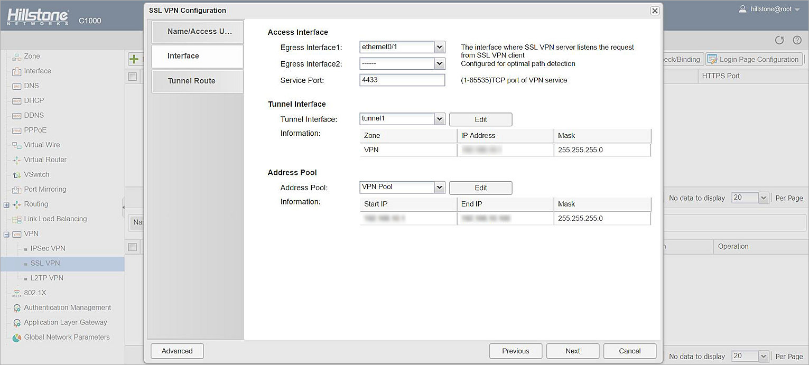
- Click Next.
- In the IP text box, type the internal network IP address.
- In the Mask text box, type the internal network subnet mask.
- Click Add.
- Click Done.
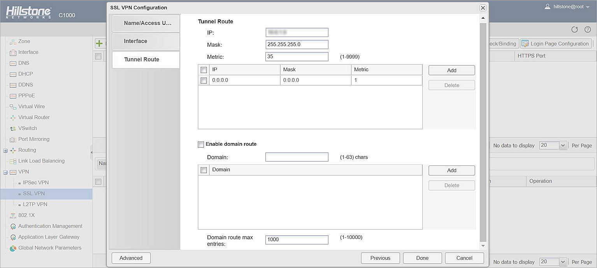
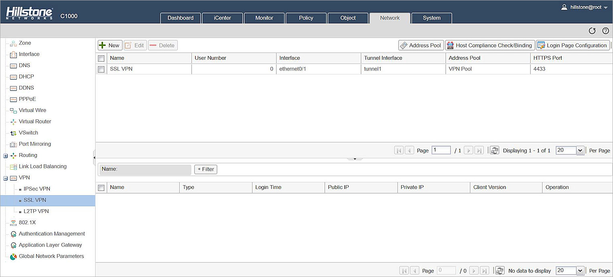
Configure an SSL VPN Policy
You must create an SSL VPN policy to allow specific users and groups to use the SSL VPN.
- Select the Policy tab.
- From the side menu, select Security Policy.
- Click New.
The Policy Configuration window opens. - In the Name text box, type the name for this policy.
- In the Source section, from the Zone drop down list, select the VPN zone you created in the Configure a Tunnel Interface section.
- In the Destination section, from the Destination> Zone drop down list, select the trust zone.
- For Action, select Permit.
- Click OK.
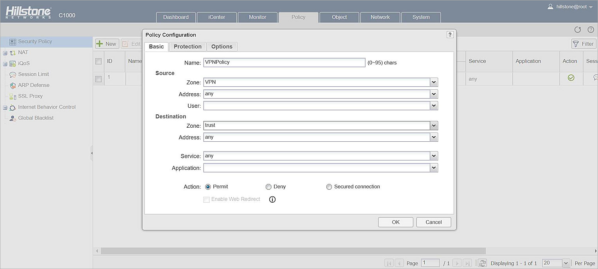
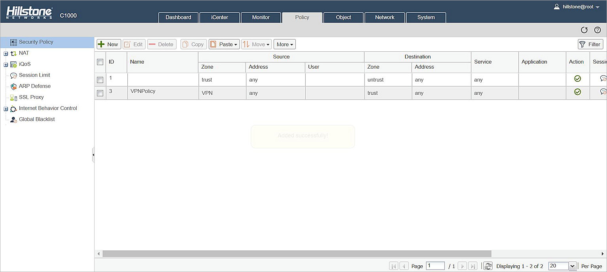
Configure AuthPoint
Before AuthPoint can receive authentication requests from Hillstone, you must:
- Specify Hillstone as a RADIUS client resource in AuthPoint.
- Add an authentication policy for the Hillstone RADIUS client resource or add the Hillstone RADIUS client resource to an existing authentication policy.
- Bind the Hillstone RADIUS client resource to the AuthPoint Gateway.
Add a Hillstone Resource in AuthPoint
From the AuthPoint management UI:
- From the navigation menu, select Resources.
Click Add Resource.
The Add Resource page opens.

- From the Type drop-down list, select RADIUS Client.
Additional fields appear.

- In the Name text box, type a friendly name for your RADIUS client resource.
- In the RADIUS client trusted IP or FQDN text box, type the IP address or the fully qualified domain name of your RADIUS client.
- In the Shared Secret text box, type the shared secret that you configured for your Hillstone Firewall.
- Click Save.
Add a Group in AuthPoint
You must have at least one user group in AuthPoint to configure MFA. If you already have a group, you do not have to add another group.
To add a WatchGuard Cloud-hosted group to the WatchGuard Cloud Directory:
- Go to Configure > Directories and Domain Services.
- Click the WatchGuard Cloud Directory domain name. If you have not yet added the WatchGuard Cloud Directory, click Add Authentication Domain and select the WatchGuard Cloud Directory.
The New Group page appears.

- In the Groups tab, click Add Group.
- In the Group Name text box, type a descriptive name for the group.
- (Optional) In the Description text box, type a description of the group.

- Click Save.
Your group is added to the WatchGuard Cloud Directory and to AuthPoint.
Add an Authentication Policy to AuthPoint
Authentication policies specify which resources users can authenticate to and which authentication methods they can use (Push, QR code, and OTP).
You must have at least one authentication policy in AuthPoint that includes the Hillstone RADIUS client resource. If you already have authentication policies, you do not have to create a new authentication policy. You can add this resource to your existing authentication policies.
Users that do not have an authentication policy for a specific resource cannot authenticate to log in to that resource.
If you already have a group, you do not have to add another group.
To configure an authentication policy:
- From the navigation menu, select Authentication Policies.
The Authentication Policies page opens.

- Click Add Policy.
The Add Policy page opens.

- In the Name text box, type a name for this policy.
- From the Select the Authentication Options drop-down list, select Authentication Options, then select which authentication options users can choose from when they authenticate.
If you enable the push and OTP authentication methods for a policy, RADIUS client resources associated with that policy use push notifications to authenticate users.
QR code authentication is not supported for RADIUS client resources.
- From the Groups drop-down list, select which groups this policy applies to. You can select more than one group. To configure this policy to apply to all groups, select All Groups.
- From the Resources drop-down list, select the resource that you created in the previous section. If you want this policy to apply to additional resources, select each resource this policy applies to. To configure this policy to apply to all resources, select All Resources.

-
(Optional) If you have configured policy objects such as a Network Location, select which policy objects apply to this policy. When you add a policy object to a policy, the policy only applies to user authentications that match the conditions of the policy objects. For example, if you add a Network Location to a policy, the policy only applies to user authentications that come from that Network Location. Users who only have a policy that includes a Network Location do not get access to the resource when they authenticate outside of that Network Location (because they do not have a policy that applies, not because authentication is denied).
For RADIUS authentication, policies that have a Network Location do not apply because AuthPoint does not have the IP address of the user.
If you configure policy objects, we recommend that you create a second policy for the same groups and resources without the policy objects. The policy with the policy objects should have a higher priority.

- Click Save.
Your policy is created and added to the end of the policy list.When you create a new policy, we recommend that you review the order of your policies. AuthPoint always adds new policies to the end of the policy list.
Bind the RADIUS Resource to a Gateway
The AuthPoint Gateway functions as a RADIUS server and must be installed somewhere on your network that has Internet access and that can connect to your RADIUS clients. To use RADIUS authentication with AuthPoint, you must assign your RADIUS resources to the Gateway in the AuthPoint management UI.
If you have not configured and installed the AuthPoint Gateway, see About Gateways.
- From the navigation menu, select Gateway.
- Select the Name of the Gateway.
-
From the RADIUS section, in the Port text box, type the port number used to communicate with the Gateway. The default ports are 1812 and 1645.
If you already have a RADIUS server installed that uses port 1812 or 1645, you must use a different port for the AuthPoint Gateway.
- From the Select a RADIUS Resource drop-down list, select your RADIUS client resource.
- Click Save.
Add Users to AuthPoint
Before you assign users to a group, you must add the users to AuthPoint. There are two ways to add AuthPoint user accounts:
- Sync users from an external user database
- Add WatchGuard Cloud-hosted AuthPoint users
Each user must be a member of a group. You must add at least one group before you can add users to AuthPoint.
To import users from Active Directory, Microsoft Entra ID, or an LDAP database, you must add an external identity in the AuthPoint management UI. External identities connect to user databases to get user account information and validate passwords.
- To sync users from Active Directory or an LDAP database, you must add an LDAP external identity
- To sync users from Microsoft Entra ID, you must add a Microsoft Entra ID external identity
When you sync users from an external user database, you can sync any number of users and they are all added to AuthPoint at one time. Users synced from an external user database use the password defined for their user account as their AuthPoint password.
To learn how to sync users, go to Sync Users from Active Directory or LDAP and Sync Users from Azure Active Directory.
You create WatchGuard Cloud-hosted users and groups from the WatchGuard Cloud Directory in WatchGuard Cloud. Directories and Domain Services is where you add shared authentication domains for WatchGuard Cloud devices and services, such as AuthPoint.
Users that you add to the WatchGuard Cloud Directory are automatically added to AuthPoint as well.
You add local AuthPoint users form Directories and Domain Services. You manage the users in AuthPoint on the Users page.
When you add WatchGuard Cloud-hosted AuthPoint users, you choose whether the user is an MFA user or a non-MFA user.
- MFA users are user accounts that will use AuthPoint multi-factor authentication to authenticate. This is not related to the AuthPoint Multi-Factor Authentication license type.
- Non-MFA users are users that will only ever authenticate with a password, such as a service account user. Non-MFA users do not consume an AuthPoint user license and cannot authenticate to resources that require MFA. They can only authenticate to protected resources if the non-MFA user account has a password only authentication policy for that resource.
After you add a user, you can edit the user account if you need to change their account type. When you change a user account from MFA to non-MFA, AuthPoint deletes the tokens and password vault (if applicable) that belong to the user. This action cannot be undone.
Unlike users synced from an external user database, WatchGuard Cloud-hosted AuthPoint users define and manage their own AuthPoint password. When you add a WatchGuard Cloud-hosted user account, the user receives an email that prompts them to set their password.
To learn how to add WatchGuard Cloud-hosted AuthPoint user accounts to the WatchGuard Cloud Directory, go to Add Local Users to an Authentication Domain.
Test the Integration
To test AuthPoint MFA with Hillstone, you can authenticate with a mobile token on your mobile device. For RADIUS resources, you can choose one-time password (OTP) or push.
In this example, we show the one-time password authentication method.
- In a web browser, go to https://<External IP of the Hillstone Networks' Firewall>:4433.
- In the Username text box, type your AuthPoint user name.
- In the Password text box, type your AuthPoint password and the OTP shown for your token in the AuthPoint app. Do not add a space between your password and your OTP.
Example: If your AuthPoint password is Password and your OTP is 123 789, then you type Password123789.
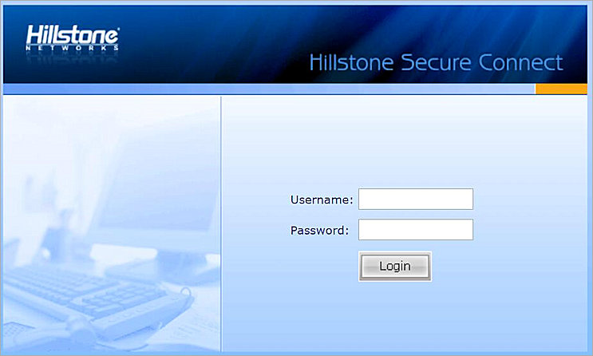
- Click Login.
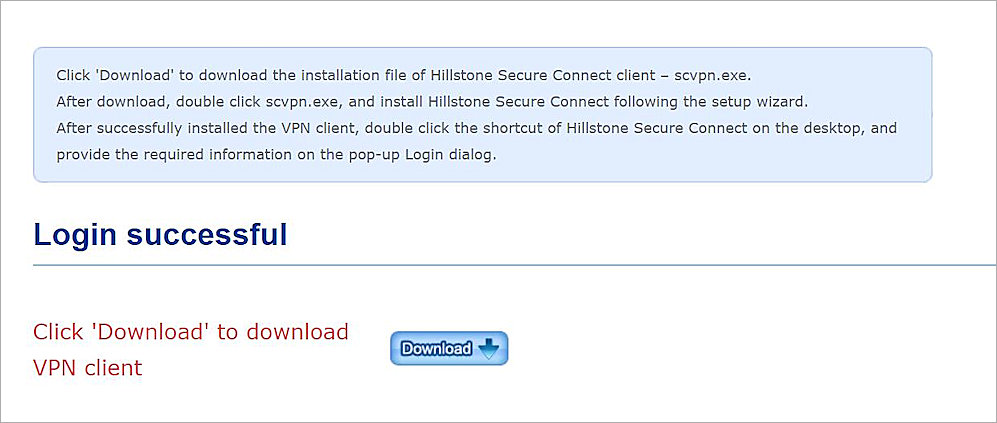
- Download and install the Hillstone Secure Connect client.
- Open the Hillstone Secure Connect client.
- In the Server text box, type the external IP address of the Hillstone Firewall.
- In the Port text box, type 4433.
- In the Username text box, type your AuthPoint user name.
- In the Password text box, type your AuthPoint password and the OTP shown for your token in the AuthPoint app. Do not add a space between your password and your OTP.
- Click Login.
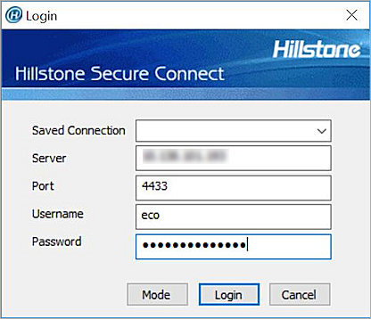
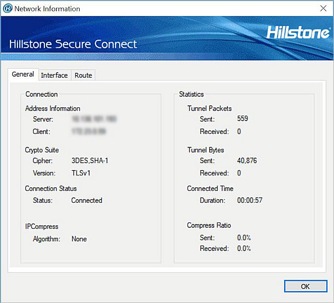